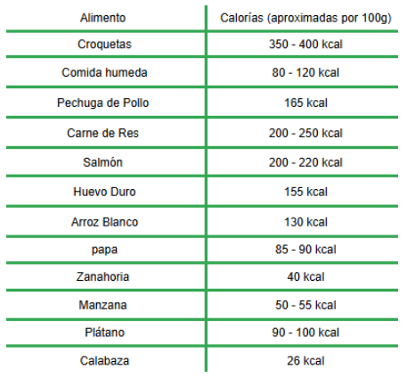

La alimentación adecuada es uno de los factores más importantes para garantizar la salud, energía y calidad de vida de tu perro. Tanto el exceso como la falta de alimento pueden generar problemas serios: el sobrepeso aumenta el riesgo de enfermedades cardíacas, diabetes y desgaste articular, mientras que una ingesta insuficiente provoca desnutrición, debilidad y pérdida de masa muscular.
Cada perro es diferente: su peso, edad, actividad física y metabolismo influyen en la cantidad real de alimento que debe consumir. Por eso, no existe una medida “única” que funcione para todas las razas. Utilizar una guía personalizada te ayuda a mantener a tu mascota en su peso ideal.
Si deseas consultar las calorías por gramo de un alimento específico (croquetas, comida húmeda o dietas especiales), puedes revisar la tabla nutricional del producto. Aquí tienes un enlace confiable donde podrás ver ejemplos reales de valores calóricos de distintos tipos de alimento:
Una vez que conozcas las calorías por gramo del alimento que usas, puedes utilizar la calculadora de abajo para obtener la cantidad exacta de comida que tu perro necesita diariamente.
Ingresa el peso de tu perro y su nivel de actividad para calcular la cantidad recomendada de alimento por día.